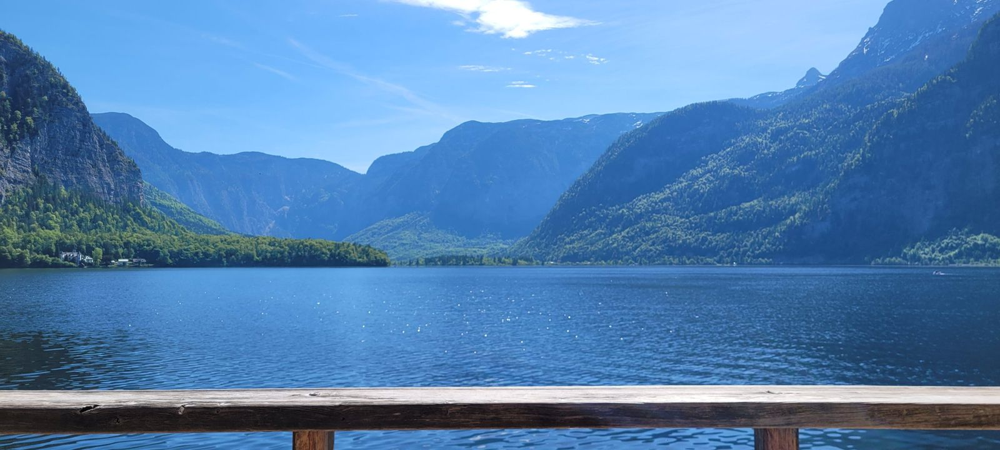
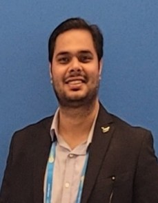

Dr. Puneet Kumar Mishra
Senior Project Associate, Ocean Engineering Division CSIR–National Institute of Oceanography, Goa
I am a coastal geomorphologist specializing in remote sensing, GIS, and geospatial analysis to investigate shoreline dynamics, coastal landform evolution, and sediment transport processes.
My research integrates multi-decadal satellite observations, geospatial modelling, and field-based measurements to understand coastal morphodynamics across seasonal, decadal, and millennial timescales. By combining satellite-derived shoreline analysis, terrain modelling, beach-profile surveys, and wave and tidal data, I examine the drivers of coastal change and the evolution of beaches, estuaries, and nearshore sandbars. My work aims to advance process-based understanding of coastal systems and contribute to evidence-based coastal management, environmental assessment, and long-term coastal resilience under changing climatic conditions.
Research
Coastal geomorphology and morphodynamics, worked out from satellite archives, DEMs and field surveys along the west coast of India.
My research investigates how coastal landscapes evolve across spatial and temporal scales and the physical processes that drive these changes. I integrate multi-decadal satellite observations from Landsat, Sentinel, and Resourcesat with GIS-based shoreline analysis to quantify changes in beaches, estuaries, and sandbars. These observations are complemented by digital elevation model (DEM) and digital terrain model (DTM) analyses, wave and tidal data, and repeated beach-profile surveys to understand the processes governing coastal morphodynamics.
My research addresses three interconnected questions:
- How do sandbars and natural channels form, evolve, and migrate within estuarine systems, and what are the implications for navigation and coastal resilience?
- How do the embayed beaches of the central west coast of India respond to seasonal monsoon forcing and long-term climatic variability?
- How has the coastline evolved over millennial timescales, as revealed by the integration of satellite-derived indicators, palaeoshoreline proxies, and field observations?
Beyond the central west coast of India, I collaborate on coastal geomorphology and morphodynamic studies across diverse environments, including the Indian Sundarbans Delta, Rameswaram Island, the Gujarat coast, and the Odisha coastline. My broader research interests also extend to spatial analysis in agricultural ecology, reflecting an interdisciplinary approach to understanding landscape dynamics and environmental change.
- PositionSenior Project Associate, Ocean Engineering Division, CSIR–NIO, Goa
- DoctoratePhD in Science (Earth, Marine Science & Remote Sensing), AcSIR, 2021–2026. Geomorphological studies of the central west coast of India.
- Study regionWest coast of India
- MethodsShoreline change analysis, image classification and change detection, DEM/DTM terrain analysis, sediment texture and beach profiling, Google Earth Engine
- Output6 peer-reviewed articles, 4 manuscripts under review, 12 conference presentations
Experience and education
Five years in the Remote Sensing and GIS lab at CSIR–NIO, from Junior Research Fellow to Senior Project Associate, built on degrees in geology and applied geology.
-
Sept 2026 – present
Senior Project Associate
Ocean Engineering Division, CSIR–National Institute of Oceanography, Goa
What the role involves
- Coastal geomorphological evolution, shoreline dynamics, sediment transport and coastal hazards, integrating remote sensing, GIS, field observations and oceanographic datasets.
- Multi-temporal geospatial analyses from satellite imagery, DEMs and UAV data to monitor shoreline change, coastal landforms and morphodynamic processes.
- Geospatial database development, quality assurance and process-based interpretation for coastal engineering and environmental management.
- Technical coordination of multidisciplinary projects: data integration, progress monitoring and deliverables.
- Technical reports, peer-reviewed publications and conference presentations with interdisciplinary teams and external stakeholders.
-
Sept 2023 – Aug 2026
Senior Research Fellow
Remote Sensing and GIS lab, Physical Oceanography Division, CSIR–NIO, Goa
What the role involved
- Integrated remote sensing, GIS and oceanographic datasets to study how waves, tides and sea-level rise shape coastal morphology along the central west coast.
- Multi-temporal satellite analyses mapping coastal geomorphology, shoreline dynamics and sedimentary landforms.
- Spatial databases, data quality control, thematic maps and graphics for reports and papers.
- Manuscript preparation, journal publication and conference presentation of results.
-
Aug 2021 – Aug 2023
Junior Research Fellow
Remote Sensing and GIS lab, Physical Oceanography Division, CSIR–NIO, Goa
What the role involved
- Acquired and pre-processed Landsat, Sentinel and Resourcesat data for baseline mapping and geomorphic classification of coastal environments.
- DEMs, tidal data and coastal profiles to evaluate elevation dynamics, sediment transport pathways and nearshore morphological adjustment.
- Ground-truthing, beach profiling and in-situ data collection to validate remotely sensed products.
- Geospatial statistics to identify change drivers and geomorphic hotspots, and to model coastal response to natural and human influences.
-
2021 – 2026
PhD in Science — Earth Science, Marine Science and Remote Sensing
Academy of Scientific and Innovative Research (AcSIR); research carried out at CSIR–NIO, Goa
Thesis: Geomorphological studies of the central west coast of India.
-
2019 – 2021
MSc, Applied Geology
Aligarh Muslim University
-
2016 – 2019
BSc, Geology, Zoology and Botany
Hemvati Nandan Bahuguna Garhwal University
Toolkit
From satellite archive to beach: the sensors, software and field instruments behind the work.
Remote sensing
- Landsat
- Sentinel
- Resourcesat
- Image classification
- Change detection
- Band ratioing
- Pan-sharpening
- Time-series analysis
- SAR processing
- Coastal zone monitoring
- Mineral exploration
- EIA
GIS and analysis
- Shoreline change analysis
- Terrain & geomorphological mapping
- Morphometric analysis
- LULC mapping
- Vulnerability assessment
- Geostatistics
- Raster & vector analysis
- Geospatial automation
- Python
- Jupyter
Software
- Google Earth Engine
- CoastSat
- ArcGIS Pro
- ArcGIS Desktop
- QGIS
- ERDAS Imagine
- ENVI
- SNAP
- Global Mapper
- Google Earth Pro
Field instruments
- GNSS-RTK
- River ADCP
- CTD
- LISST 200x particle sizer
- OBS 5+ backscatter sensor
- Optical level
- GPS
Beach profiling, sediment sampling and in-situ hydrodynamics are how the satellite picture gets checked.
Where the work happens
Study sites behind the publications and collaborations, on a satellite basemap. Pick a site to zoom in.
The interactive map needs an internet connection to load satellite tiles. The sites are listed alongside.
Marker positions are approximate. Imagery © Esri and partners.
Contact
Open to collaboration on coastal change, satellite-derived shorelines and field validation. Email is the quickest way to reach me.
- Emailkatayayanpk@gmail.com
- Institute emailpuneet.nio21a@acsir.res.in
- AddressOcean Engineering Division, CSIR–National Institute of Oceanography, Dona Paula, Goa 403004, India
- ORCID0009-0002-9359-7602
- Google ScholarPublications on Scholar
- ResearchGatePuneet Mishra
- LinkedIndr-puneet-k-mishra
- OceanExpertExpert 101769